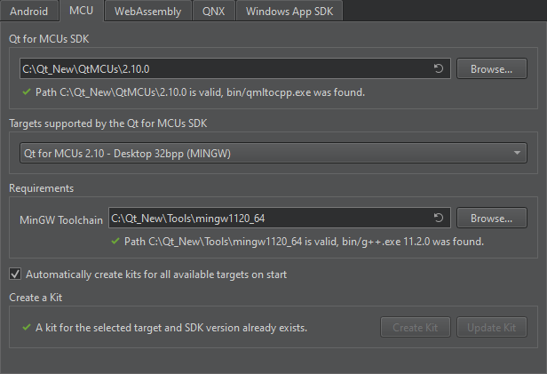

Add MCU SDKs
Note: Before you start developing for MCUs, go to Help > About Plugins, and make sure you have the Qt for MCUs plugin enabled.
To configure a connection between Qt Creator and your MCU board:
- Go to Preferences > SDKs > MCU.
- In Qt for MCUs SDK, specify the path to the directory where you installed Qt for MCUs SDK.

- In Targets supported by the Qt for MCUs SDK, select your MCU board.
- In Requirements, check that the platform-specific requirements are met. This depends on the target:
- For Infineon targets:
- The Green Hills Compiler for ARM or IAR ARM Compiler path.
- The Graphics Driver for Traveo T2G Cluster Series path.
- The Infineon Auto Flash Utility path.
- For NXP targets:
- The GNU ARM Embedded Toolchain or IAR ARM Compiler path.
- The MCUXpresso IDE install path.
- The Board SDK for the chosen target.
- The FreeRTOS Sources for the chosen target.
- For Renesas targets:
- The Green Hills Compiler path.
- The Renesas Graphics Library path.
- The Renesas Flash Programmer path (optional).
- For STM32 targets:
- The GNU ARM Embedded Toolchain or IAR ARM Compiler path.
- The STM32CubeProgrammer install path.
- The Board SDK for the chosen target.
- The FreeRTOS Sources for the chosen target.
- For Infineon targets:
- Select Automatically create kits for all available targets on start to create kits automatically the next time Qt Creator starts.
Note: Select Create Kit to manually create kits for the target.
- Select Apply to save the preferences.
See also Enable and disable plugins, How To: Develop for MCUs, and Developing for MCUs.